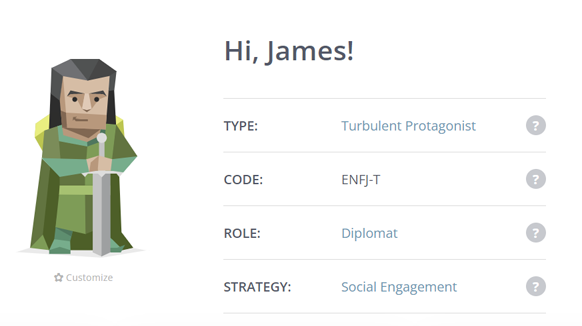
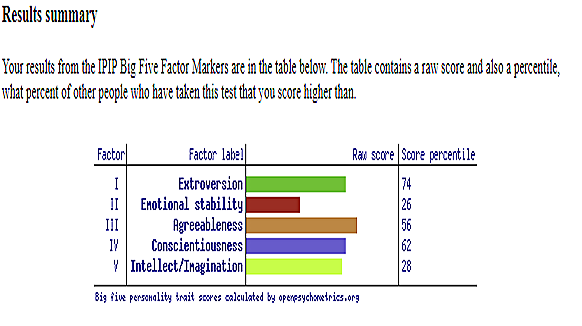

Originally from the UK, I came out to live in Australia permanently in 2003. I have a Diploma in Software Development and an Advanced Diploma in Business Analysis through TAFE NSW. I love participating in sport and running is my passion, but you’ll also catch me out bushwalking or Cycling. I recently have developed a love for motorbikes and am planning many road trips to come. I love Rock and Metal music, but you’ll find me buying tickets to a symphony. I have a Jack Russell cross called Banjo who loves to run with me once or twice a week. I am married (17 years and the reason I’m in Australia) and we have a daughter.
Personal Information
Interest in IT
My Interest in IT has come about in a very Organic but somewhat disjointed way. I have spent most of my career working in the Travel Industry, but it wasn’t until 2013 I was offered a secondment to work on a project as a subject Matter expert to replace a reservations system for the Travel wholesaler was working for at the time.
After 18 months on the project the company folded, and I was made redundant. I applied for a position as a Sales Rep for another travel wholesaler when they saw that I have spent the last 18 months doing project work they encouraged me to apply for a position as a Business Analyst with their development team. They were looking for someone who had travel industry experience so after a chat with the CEO and the CTO they offered me the position.
It was here that I realised my career was changing and having worked with the Developers so closely so in 2016 I decided to Take a year out and go and study Cert IV in programming which continued onto a Diploma in Software Development. The course centred around the .net framework and used C# as the foundation along with SQL JavaScript html and CSS.
After completing my Diploma, I was looking for work, when an ex-colleague reached out to me for a six-month position in application support to cover someone on long service leave for a Travel Tech company, Unfortunately they were not in a position to take me on full time so I then spent the next year on a temporary contract for another Travel wholesaler a little unsure where all this was going Not being dauted by this I decided to head back to TAFE and in 2018 I completed an Advanced Diploma in Information Technology Business Analysis. While studying this I also started a position as a Developer in support for a company called 15below who specialise in passenger communications. This was using the .net framework and the focus was managing the Day to day of the Application. The position involved:
- monitoring the system using a piece of software called Frame Flow https://www.frameflow.com/. This could run a series of SQL statements or check logfiles for error and alert a user is something was amiss.
- Updating Airline Templates for email and SMS using html and CSS
- Updating core logic in VB, C# with minor changes
- Updating config files
- Updating translation layers using xslt
- Writing reports in SQL using Sequel Server Reporting Services
- Responding to Airline Tickets raised in Zendesk
- Investigations into why the system did not produce documents for a passenger or why a system/service errored
However due to personal circumstances after 3 years I have since left this position and am looking for part time work so I can focus on obtaining a Degree in IT. I have chosen to come to RMIT through Open University as I needed the flexibility of online learning. For now, I have only chosen one subject as I don’t want to take on too much but hope in the next semester to take on the Introduction to Programming. This is to enable me to take on the full Degree course.
My aim in taking the Degree is to better educate myself and importantly fill in any gaps in my knowledge. I hoping to become a better developer and gain a better understanding of software development principals. Additionally, I would like to take a deeper dive into software development and a more scientific approach to IT, for example how does software interact with hardware? In addition, I am also hoping to make myself more employable.
Ideal Job
My current Asprirations would be as similar to a Full Stack Developer.
I see a senior full stack developer as pretty much the zenith in as far as developers go. Having the ability to design and implement front to back-end software, understand the technologies and their purpose is of great appeal to me. Not only would you need to understand the nuances of the different code but also how the actual framework can be used.
This position requires the developer to have a sound Understanding of MS SQL Server, Azure web services, C# code Language, be able to build Web Api's and understand Model View Controller architecture (MVC). In addition, web technologies such as Angular and React which are JavaScript frameworks. Additionally, understating of TDD (Test Driven Design) and BDD Behaviour Driven Design Principals as well as architectural design patters (Assuming CRUD, SOLID, Singleton patters, containers and Factories).
I have some very limited experience with .net core tech-stack, but my C# skills leave a lot to be desired. I have a Cert IV and Diploma in software Development which gave me some experience building solutions in .net core and Android studio, but it’s been some time since I have used these skills.
My recent position in Application support gave me intermediate knowledge in Sequel Server Management Studio as I used SQL daily. I also gained limited experience in XSLT which is something no one seems to teach any more but still quite prevalent in Legacy systems. I have experience with frontend HTML and CSS, but I need to develop my Java script skills.
My current plan is to develop my C# skills and I am starting, all be it slowly, to use Pluralsight to gain better knowledge. I also have a plan to develop my own website about me showcasing my knowledge as I go through this degree course. The Idea is to constantly add topics to the site about various Developer technologies and design principals and how they can be used as i learn about them. This will serve not only to capture my experience and use a reference but allow me to build a website from scratch and host it using perhaps a cloud-based solution such as Azure (something I have not done before). In addition, this will serve as a reference point to future employees as to my skill set.
Personal Profile
16 Personalities
My 16 Personalities profile can be viewed Here
I’d say the results in this are reasonably accurate 53% Extroverted 47% Introverted. I tend to approach a new team reservedly but once I understand each personality my extroverted side takes over. I can be cool headed but will happily take on the debate and get my point across. I’m more likely to follow the facts than push a passioned agenda as facts and truths what will set debate apart and allow us to have a clear path.
Honey & Mumford Learning styles quiz
Pragmatist is very strong here and I’d have to say I’m 100% in agreeance as I very much don’t see the value in something unless it can be applied in the real world. Everything must have a purpose and even an Automaton has a learning quality. Next is reflector which may also tie in with my personality type of not rushing into a situation without assessing. It like jumping into a river from a rock platform. Assess the situation and make sure it’s safe once it is it’s game on for wild fun! I was always the Kid that would go first but never without evaluation. You can’t lead properly without some answers and blind faith will send you down the wrong path.
Big 5 Personality Test
I’d say I’m generally outgoing and predominantly Extroverted. In a Team I’m happy to take on the lead. I may not have all the answers which is why I’ll be working with you and your superior knowledge to help coordinate and get the work done. I’m conscientious in that everyone in the team has a role to play regardless of personality.
Conflicts need to be resolved quickly with both parties needing to reach a compromise, but I acknowledge that I may not be overly willing to compromise. However, I like to believe that conflict can be negated buy team cooperation and by-in from the get-go. It’s important that every member of the team has an opportunity to put forward ideas and criticisms. After all, even the quietest person can provide solutions. My role when mitigating conflict is to help mediate and arrive at the best solution for team cohesiveness. This will involve a diplomatic approach considering a person’s idea may be their passion. Facts should always take precedence and when people disagree open dialog and discussion should be used to arrive at compromise.
Project Idea
Overview
The Aim is to build a web app for Performance coaches that links to smart watches such as Garmin and sununto. The app will give runners the ability to upload the metrics from their smart watches to a dedicated coaching app. The Idea being that a coach would get these metrics after a run and be able to analyse data and specifically tailor training loads for individuals based on metrics such as heart rate, Vo2 max milage etc. Additionally, coaches would have the ability to add training sessions to the app and give advice/feedback in addition to Athletes also giving feedback. The app would be aimed at but not exclusive to running, cycling, swimming and Trathlete clubs/groups and can be used by elite through amateur athletes.
Motivation
As a Runner myself being able to directly share my biometrics with my coach is a useful tool in my development as a runner. There are times when training sessions go wrong as fatigue from previous training has built up. It’s not always possible to detect this simply by me providing verbal feedback to coach and could lead to further fatigue and possible injury (feeling good but your resting Heart rate is up). Conversely, coach may reduce a training load, being cautious when not necessary. Additionally, it would provide a go to place for historical data.
Description
It’s not always possible for a coach to receive and give feedback on the day of a training session especially when you are faced with 20-30 athletes all vying for your attention. The Performance Coach application empowers coaches and athletes by providing an online collaboration tool so that training goals can be achieved, and training Loads monitored by way of athlete feed back and a powerful set of metrics. Information from smart devices, such as smartwatches, can be uploaded to provide metrics such as heart rate and milage to give a coach an overall view of an athlete’s fitness.
The application will allow coaches to not only set training plans, but also give them the ability to alter training sessions based on the athletes training needs. Additionally, the application will allow athletes to set race goals and have the visibility of where they are now and how far off the goal they are. This will give the athlete a clear picture as to how achievable the goal is in addition to insights on the required time and work need to achieve it based, off their current fitness.
The application all also allow the athlete to detail any additional training coach is not aware of, such as strength training or additional runs through the week (this happens and is not always fed back to coach). Smartwatch companies such as Garmin and Suunto offer an API and have dedicated developer websites such as the Garmin Developer Site and the Suunto Developer Site.
Performance Coach will track history of an athlete’s personal development from day one which the athletes will be able to take with them anywhere. So, if an Athlete changes Coach they can take this historical date and present it to their new coach who can immediately tap into their training needs. In addition, Performance Coach will allow a smart device to sync and back date information into the application.
In addition to a Web application Performance Coach will give access to a mobile app for iOS and Android so coaches and athletes can access information when a computer is simply not available.
Performance Coach will allow for athletes such as Runners, cyclists, swimmers, Triathletes and could be tailored to other sports such as Team sports, rowing etc.
The aim would be to not just allow, a “one stop shop solution” but be able to Taylor the solution to a coach’s specific needs and style of coaching.
Tool and Technologies
The main web application will be built using .net core 6 framework and will employ technologies such as:
- Front End
- - HTML CSS and Java script will be used on the front end for the web development along with other third-party applications such as bootstrap CSS and angular where needed.
- Back End
- - C# will handle back-end code and APIs and razor engine with tag helpers will be used to pass information to and from the frontend.
- Design
- - MVC MVVM patters will be deployed and a code first approach using Entity Framework core. This will help to rapidly build the data base based on needs. This will also allow Authentication and authorization for API services.
- Security
- - Identity framework will provide a level of security and encryption (256bit encryption).
- API's
- - RESTful API will be created to handle mobile applications so that native iOS and Android technologies can be used to communication with the main application.
- Data base
- - Ms Sequal Server will be used to sotre and handle all data
- Hosting
- - Azure Webservices will host all applications
- version control and Release
- - Git and GutHub will be used to contrl the flow of work. in addition Nuget packaget and Team ciry will link with Octopus deploymnet software
- Environments
- - Development, Testing, User Acceptance Testing and Production Environments will be required
- Harware
- - Hardware will generaly be limited to local machines for Developers, cloud services should be able to provide a solution for all enviromnents so the use of servers in this case may be limited perhaps negated.
Skills Required
Full stack .net developers will be needed for the main application. HTML CSS C# java script. Developers must have experience with .net core and be familiar with identity and Entity framework.
Developers must the have ability and experience to build RESTful API services. Developers will need experience in Azure webservices.
UX and UI designers will be needed for the web and mobile applications and experience with Adobe suite is essential.
In addition, subject matter experts will be needed such as skilled coaches and exercise physiologists to provide training insights and expertise.
Business Analysis and Project managers will work alongside Development teams in a Scrum approach enabling rapid software development.
Outcome
The Outcome of the project is to provide a viable and competitive solution to current technologies such as Training Peaks.
There are limited applications of this nature in the marketplace and uptake is limited by coaches due to lack of competition and pricing.
The application will give coach’s clearer and better visibility to the individual training needs of any athlete from the recreational amateur to the Elite athlete.